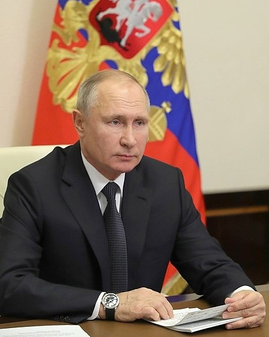
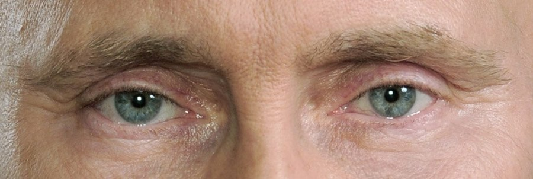

Влади́мир Влади́мирович ПУТИН (род. 7 октября 1952, Ленинград)
— российский государственный и политический деятель. Действующий президент Российской Федерации и верховный главнокомандующий Вооружёнными силами Российской Федерации с 7 мая 2012 года.
Ранее занимал должность президента с 31 декабря 1999 года по 7 мая 2008 года, также в 1999—2000 и 2008—2012 годах занимал должность председателя Правительства Российской Федерации.
Выпускник юридического факультета Ленинградского государственного университета (ЛГУ). С 1977 года работал по линии контрразведки в следственном отделе Ленинградского управления КГБ СССР[6]. С 1985 года по 1990 год служил в резидентуре советской внешней разведки в ГДР, работал в Дрездене под прикрытием в должности директора дрезденского Дома дружбы СССР—ГДР. По возвращении в Ленинград работал помощником ректора ЛГУ по международным вопросам, затем советником председателя Ленинградского горсовета Анатолия Собчака. 20 августа 1991 года в звании подполковника уволился из КГБ.
В 1991—1996 годах продолжал работу под началом Собчака, перейдя в мэрию Санкт-Петербурга: возглавлял Комитет по внешним связям, был советником мэра, затем первым заместителем. С августа 1996 года начал работать в Москве в должности заместителя управляющего делами президента РФ. После недолгого пребывания во главе Федеральной службы безопасности РФ и на посту секретаря Совета Безопасности в августе 1999 года был назначен председателем правительства.
Первым лицом государства стал 31 декабря 1999 года, когда по решению президента России Бориса Ельцина был назначен исполняющим обязанности президента РФ — в связи с уходом первого президента России в отставку. Впервые избран президентом России 26 марта 2000 года. Переизбирался на пост главы государства в 2004, 2012 и 2018 годах. Перед выборами 2012 года срок президентских полномочий был увеличен с 4 до 6 лет.
После вступления в силу поправок к Конституции Российской Федерации получил право участвовать в новых президентских выборах в марте 2024 года.
Полковник запаса (1999). Действительный государственный советник Российской Федерации 1 класса (1997)[7]. Кандидат экономических наук (1997). Мастер спорта по самбо (1973) и дзюдо (1975)[8], чемпион Ленинграда по дзюдо (1976)[9][10], заслуженный тренер России по самбо (1998)[11][12]. Свободно владеет немецким языком[13][14].
